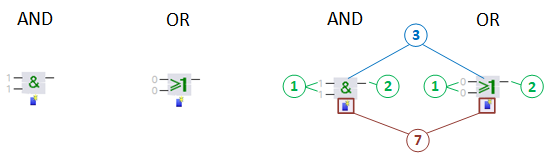
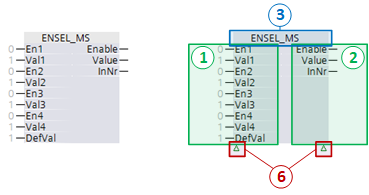
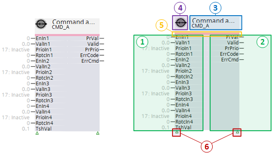
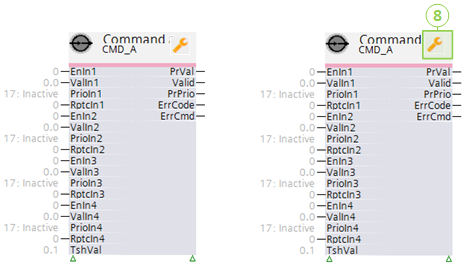
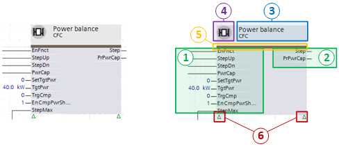
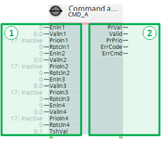
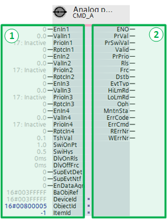

Depiction of function blocks and nested charts
Function blocks can be divided into the following groups according to their complexity. These groups of function blocks and nested charts are displayed differently and have different numbers of elements.
Sub-division by complexity
Complexity
- Function blocks for simple instructions, e.g., logical operations
- Function blocks for more complex instructions
- Function blocks with a link to a BACnet object
- Nested charts
Depictions of function blocks for simple instructions
Function blocks for simple instructions, e.g., logical operations, are displayed significantly smaller in the Programming editor than other function blocks.
Example: AND and OR

① Inputs
② Outputs
③ Text field
⑦ Action field: Each click of a symbol adds another input. Pins can be shown or hidden in the property window of the function block.
Depiction of function blocks for more complex instructions
Example: ENSEL_MS

① Inputs
② Outputs
③ Text field
⑥ Display field: Signals that not all pins are shown.
Depictions of function blocks with link to BACnet object
Example: CMD_A in offline mode

① Inputs
② Outputs
③ Text field
④ Function symbol
⑤ Color code
⑥ Display field
An auxiliary symbol signals the state of extended function blocks when accessing the plant online.
Only 1 symbol is displayed for the online mode. For multiple active state messages, only the symbol for the most important message is displayed.
Example: CMD_A in online mode

⑧ State symbol in online mode
The following state symbols can be displayed in online mode:
Symbol | Description |
|---|---|
Out of service | |
Error | |
Local override | |
| Active alarm |
Confirm active alarm | |
Inactive alarm | |
| Confirm inactive alarm |
Commanded at priority 1 | |
Commanded at priority 8 |


Depictions of nested charts
Example: Power control and compensation

① Inputs
② Outputs
③ Text field
④ Function symbol
⑤ Color code
⑥ Display field
Elements of function blocks and nested charts
Example: Depiction of a nested chart
① Inputs and ② Outputs
Function blocks and nested charts have inputs and outputs to enter and provide values. This may occur directly or by interconnecting with other function blocks and nested charts.
Inputs are always arranged to the left; outputs always to the right.
By default, only the most important inputs and outputs are displayed in the Programming editor. The green triangle below the function block or nested chart signals that not all input and output pins are shown. The default values for hidden inputs and outputs are set so that they have no impact.
Hidden inputs and outputs can be shown in the properties for the function block or nested chart.
The following example displays function block CMD_A where some inputs and outputs are shown.

① Inputs
② Outputs
The following example displays the same function block with all inputs and outputs.

① Inputs
② Outputs
③ Text field
On function blocks for simple instructions, the character for the logical operation is displayed in the text field, e.g., & for AND or 1 for OR.
On function blocks for more comprehensive instructions, the name of the function block is displayed in the text field.
The following is displayed on extended function blocks and nested charts:
- A short description in the first line
- The name of the function block or nested chart in the second line
- The hardware address of the assigned BACnet object in the third line:
- TX Onboard: Terminal name
- TX-I/O module: Module address
- Network device point: Point address
- BACnet reference: Device ID, type, instance ID
The following example displays the text field for function block CMD_B:
④ Function symbol
The symbol displays the function within the plant.
Symbol | Description |
|---|---|
Nested chart | |
Input block with assigned physical BACnet object (e.g. AI, BI, MI) | |
Output block with assigned physical BACnet object (e.g. AO, BO, MO) | |
Input block or output block with assigned BACnet value object (e.g. AConfVal, APrcVal) | |
Input block or output block without assigned BACnet object. The symbol changes as soon as the block is assigned a BACnet object. | |
Special BACnet object such as Common Event, Loop | |
Block with link to a group manager object | |
Block with scheduler |
⑤ Color codes
Color codes define the type of function block or nested chart or the data type processed by a function block.
Color | Description |
|---|---|
Nested chart | |
Extended function block, data type analog | |
Extended function block, data type binary | |
Extended function block, data type multistate |
⑥ Display
The green triangle signals that not all pins are shown. Pins can be shown or hidden in the property window of the function block or nested chart.
- Only inputs are hidden if only one symbol is displayed below the inputs.
- Only outputs are hidden if only one symbol is displayed below outputs.
- Both inputs and outputs are hidden if both symbols are displayed.